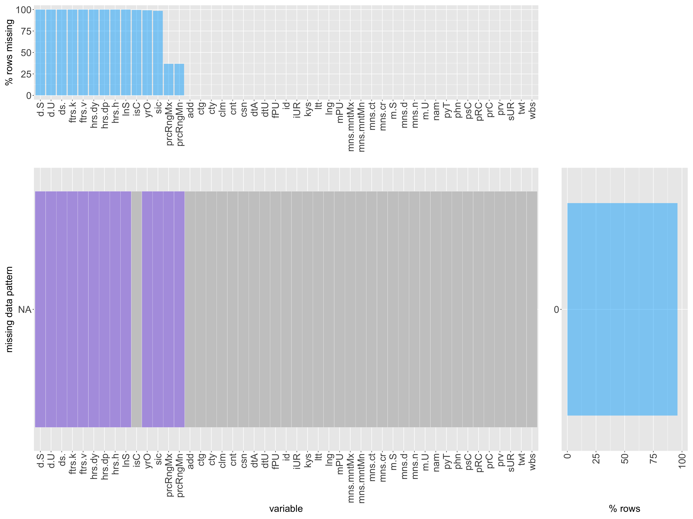

Chapter 4 Missing values
4.1 Visual representation of missing values in dataset
38.3% of all observations in the data are missing while 61.7% of the observations in the data are present.
## descriptions.dateSeen descriptions.sourceURLs descriptions.value
## 10000 10000 10000
## features.key features.value hours.day
## 10000 10000 10000
## hours.dept hours.hour languagesSpoken
## 10000 10000 10000
## isClosed yearOpened sic
## 9963 9909 9860
## claimed facebookPageURL twitter
## 9311 9063 8042
## paymentTypes menus.description imageURLs
## 6127 6013 4866
## menus.category priceRangeCurrency priceRangeMin
## 4070 3673 3673
## priceRangeMax websites menus.currency
## 3673 1817 53
## id dateAdded dateUpdated
## 0 0 0
## address categories primaryCategories
## 0 0 0
## city country cuisines
## 0 0 0
## keys latitude longitude
## 0 0 0
## menuPageURL menus.amountMax menus.amountMin
## 0 0 0
## menus.dateSeen menus.name menus.sourceURLs
## 0 0 0
## name phones postalCode
## 0 0 0
## province sourceURLs
## 0 0## NOTE: In the following pairs of variables, the missingness pattern of the second is a subset of the first.
## Please verify whether they are in fact logically distinct variables.
## [,1] [,2]
## [1,] "claimed" "imageURLs"
## [2,] "claimed" "menus.currency"
## [3,] "claimed" "websites"
## [4,] "descriptions.dateSeen" "facebookPageURL"
## [5,] "descriptions.dateSeen" "imageURLs"
## [6,] "descriptions.dateSeen" "isClosed"
## [7,] "descriptions.dateSeen" "menus.category"
## [8,] "descriptions.dateSeen" "menus.currency"
## [9,] "descriptions.dateSeen" "menus.description"
## [10,] "descriptions.dateSeen" "paymentTypes"
## [11,] "descriptions.dateSeen" "priceRangeCurrency"
## [12,] "descriptions.dateSeen" "priceRangeMin"
## [13,] "descriptions.dateSeen" "priceRangeMax"
## [14,] "descriptions.dateSeen" "sic"
## [15,] "descriptions.dateSeen" "twitter"
## [16,] "descriptions.dateSeen" "websites"
## [17,] "descriptions.dateSeen" "yearOpened"
## [18,] "descriptions.sourceURLs" "facebookPageURL"
## [19,] "descriptions.sourceURLs" "imageURLs"
## [20,] "descriptions.sourceURLs" "isClosed"
## [21,] "descriptions.sourceURLs" "menus.category"
## [22,] "descriptions.sourceURLs" "menus.currency"
## [23,] "descriptions.sourceURLs" "menus.description"
## [24,] "descriptions.sourceURLs" "paymentTypes"
## [25,] "descriptions.sourceURLs" "priceRangeCurrency"
## [26,] "descriptions.sourceURLs" "priceRangeMin"
## [27,] "descriptions.sourceURLs" "priceRangeMax"
## [28,] "descriptions.sourceURLs" "sic"
## [29,] "descriptions.sourceURLs" "twitter"
## [30,] "descriptions.sourceURLs" "websites"
## [31,] "descriptions.sourceURLs" "yearOpened"
## [32,] "descriptions.value" "facebookPageURL"
## [33,] "descriptions.value" "imageURLs"
## [34,] "descriptions.value" "isClosed"
## [35,] "descriptions.value" "menus.category"
## [36,] "descriptions.value" "menus.currency"
## [37,] "descriptions.value" "menus.description"
## [38,] "descriptions.value" "paymentTypes"
## [39,] "descriptions.value" "priceRangeCurrency"
## [40,] "descriptions.value" "priceRangeMin"
## [41,] "descriptions.value" "priceRangeMax"
## [42,] "descriptions.value" "sic"
## [43,] "descriptions.value" "twitter"
## [44,] "descriptions.value" "websites"
## [45,] "descriptions.value" "yearOpened"
## [46,] "facebookPageURL" "paymentTypes"
## [47,] "facebookPageURL" "priceRangeCurrency"
## [48,] "facebookPageURL" "priceRangeMin"
## [49,] "facebookPageURL" "priceRangeMax"
## [50,] "facebookPageURL" "websites"
## [51,] "features.key" "imageURLs"
## [52,] "features.key" "isClosed"
## [53,] "features.key" "menus.category"
## [54,] "features.key" "menus.currency"
## [55,] "features.key" "menus.description"
## [56,] "features.key" "paymentTypes"
## [57,] "features.key" "priceRangeCurrency"
## [58,] "features.key" "priceRangeMin"
## [59,] "features.key" "priceRangeMax"
## [60,] "features.key" "sic"
## [61,] "features.key" "twitter"
## [62,] "features.key" "websites"
## [63,] "features.key" "yearOpened"
## [64,] "features.value" "imageURLs"
## [65,] "features.value" "isClosed"
## [66,] "features.value" "menus.category"
## [67,] "features.value" "menus.currency"
## [68,] "features.value" "menus.description"
## [69,] "features.value" "paymentTypes"
## [70,] "features.value" "priceRangeCurrency"
## [71,] "features.value" "priceRangeMin"
## [72,] "features.value" "priceRangeMax"
## [73,] "features.value" "sic"
## [74,] "features.value" "twitter"
## [75,] "features.value" "websites"
## [76,] "features.value" "yearOpened"
## [77,] "hours.day" "imageURLs"
## [78,] "hours.day" "isClosed"
## [79,] "hours.day" "menus.category"
## [80,] "hours.day" "menus.currency"
## [81,] "hours.day" "menus.description"
## [82,] "hours.day" "paymentTypes"
## [83,] "hours.day" "priceRangeCurrency"
## [84,] "hours.day" "priceRangeMin"
## [85,] "hours.day" "priceRangeMax"
## [86,] "hours.day" "sic"
## [87,] "hours.day" "twitter"
## [88,] "hours.day" "websites"
## [89,] "hours.day" "yearOpened"
## [90,] "hours.dept" "imageURLs"
## [91,] "hours.dept" "isClosed"
## [92,] "hours.dept" "menus.category"
## [93,] "hours.dept" "menus.currency"
## [94,] "hours.dept" "menus.description"
## [95,] "hours.dept" "paymentTypes"
## [96,] "hours.dept" "priceRangeCurrency"
## [97,] "hours.dept" "priceRangeMin"
## [98,] "hours.dept" "priceRangeMax"
## [99,] "hours.dept" "sic"
## [100,] "hours.dept" "twitter"
## [101,] "hours.dept" "websites"
## [102,] "hours.dept" "yearOpened"
## [103,] "hours.hour" "imageURLs"
## [104,] "hours.hour" "isClosed"
## [105,] "hours.hour" "menus.category"
## [106,] "hours.hour" "menus.currency"
## [107,] "hours.hour" "menus.description"
## [108,] "hours.hour" "paymentTypes"
## [109,] "hours.hour" "priceRangeCurrency"
## [110,] "hours.hour" "priceRangeMin"
## [111,] "hours.hour" "priceRangeMax"
## [112,] "hours.hour" "sic"
## [113,] "hours.hour" "twitter"
## [114,] "hours.hour" "websites"
## [115,] "hours.hour" "yearOpened"
## [116,] "isClosed" "menus.currency"
## [117,] "isClosed" "websites"
## [118,] "languagesSpoken" "menus.category"
## [119,] "languagesSpoken" "menus.currency"
## [120,] "languagesSpoken" "menus.description"
## [121,] "languagesSpoken" "paymentTypes"
## [122,] "languagesSpoken" "priceRangeCurrency"
## [123,] "languagesSpoken" "priceRangeMin"
## [124,] "languagesSpoken" "priceRangeMax"
## [125,] "languagesSpoken" "sic"
## [126,] "languagesSpoken" "twitter"
## [127,] "languagesSpoken" "websites"
## [128,] "languagesSpoken" "yearOpened"
## [129,] "menus.category" "menus.currency"
## [130,] "twitter" "websites" All of the missing observations observed are from 12 main variables as presented from the map above.
All of the missing observations observed are from 12 main variables as presented from the map above.
4.2 Missing by borough
4.3 Number missing by city
 Observations:
We examined missing data by city, and interestingly enough, the majority of the missing data counts are those from New York City.
Observations from Brooklyn have the second highest number of missing data.
4.3.0.1 Function for examining missing data
4.3.0.2 Applying data.missing function to data

 Observations:
Observations:
Based on the resulting maps of missing data, we can note there may be a possibility of there being correlations between the first 9 variables listed on the map, as these variables all seem to have missing data within the same rows.
100% of the data within these rows also appear to be missing.
The first missing data pattern displayed on the map accounts for just over 60% of the rows in the data
The second missing data pattern displayed on the map accounts for just over 35% of the rows of the data
There are no complete cases of no missing data within this dataset.